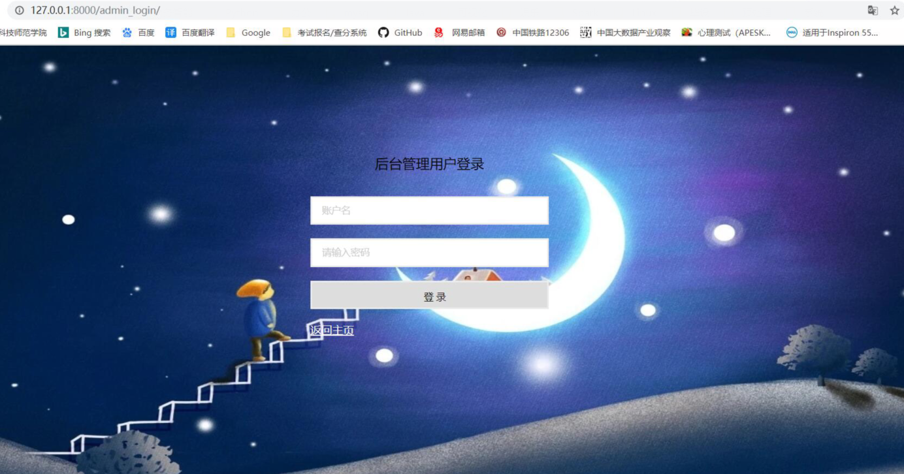
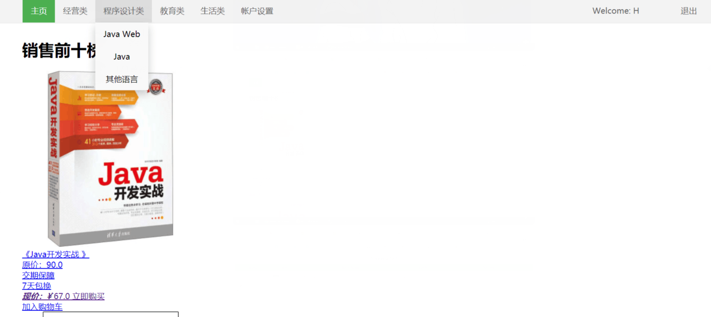
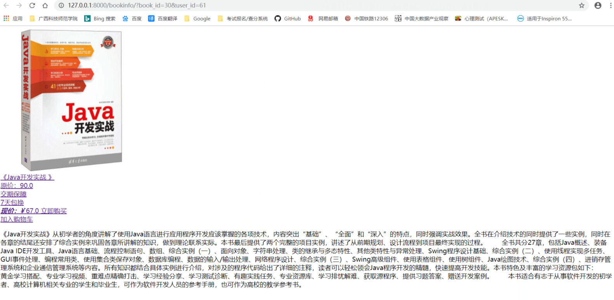
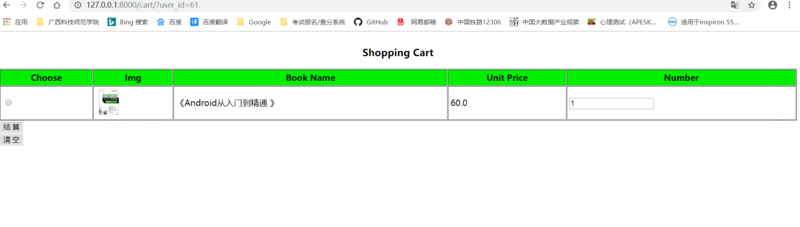

图书选购系统
图书选购系统是为用户提供一个图书选购平台，方便用户管理图书和顾客选购图书，鉴于当前很多书店都是规模较小、 信息化程度不高，书籍查询和销售效率相对较低，因此开发一个小型的会员管理系统对于这些门店来说就显得十分必要， 该项目就是针对这种情况，设计开发一个适用于这些书店的图书选购管理系统，方便用户对书籍的管理和顾客对书籍的选购。
该系统使用Python的Django框架实现，数据存储使用MySQL数据库， 主要应用到的技术包括Python、HTML、CSS、JavaScript。
后端成员：黄彩思、李泽正
前端成员：胡善芳、刘冬尼
指导老师：张亮敬
1.用户管理
用户管理主要包括“用户新增”、“用户注销”、“用户信息维护”、“用户信息查询”等功能。
这里的用户指的是用于管理系统的用户，不同的类型的用户应有不同的权限。如系统超级用户可以新增普通用户，
授予普通用户对系统功能块的使用权限，普通用户可以维护图书信息，交易信息等。
2.图书管理
图书管理主要包括“图书新增”、“图书下架”、“图书信息维护”、“图书信息查询”等功能。
这一部分的功能主要 是由系统管理员操作。
3.销售管理
顾客可以在系统中查询自己所需的图书，如果有需要购买的图书，可以将其添加到购物车，
对购物车中的商品进行结算即可生成订单，开始订单管理流程。
4.订单管理
订单管理主要是包括“订单支付”、“订单状态管理”、“物流查询”等。不同类型的用户具有不同的权限，
如顾客只能进行“订单支付”和物流查询，管理员可以进行“订单状态管理”等。
1.前端页面还不够美观，后期需要再做调整。
2.许多数据校验都没做，后期会针对数据校验问题进行优化。
3.订单管理模块还没完成，后期找时间再做完善。
1.顾客登录页面

2.管理员登录页面

3.顾客主页面

4.图书信息查询

5.图书选购
